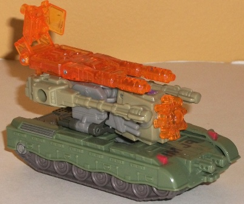
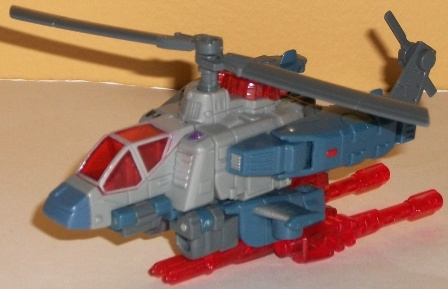

Blast
Off
Blast
Off
Size : Scout
Difficulty of Transformation : Medium
Color Scheme : Muddy brown, dull gray, transparent bright orange, dark purple, and some silver, moderately light violet, and dull orange
Rating : 9.4
Bruticus
Maximus Giftset (RotF) [Target Exclusive]
Allegiances
: Decepticon
Price
: $30 U.S.
Set Contains
: Blast Off, Decepticon
Brawl, Onslaught, Swindle, and Vortex
(NOTE: Because this is set a repaint, this
is not a full-blown review. This mainly covers any changes made to the
set and the color scheme, and merely compares it to the various Energon
Bruticus Maximus components. For a review on Kickback, the mold used for
Blast Off and Decepticon Brawl, go
here
. For
a review on Storm Cloud, the mold used for Swindle and Vortex, go
here
.
For a review on Barricade, the mold used for Onslaught, and the combined
gestalt form, go
here
.)
Blast
Off
Size
: Scout
Difficulty of Transformation
: Medium
Color Scheme
: Muddy brown, dull
gray, transparent bright orange, dark purple, and some silver, moderately
light violet, and dull orange
Rating
: 9.4
Although he's a tank
this time around instead of a space shuttle, Blast Off's name still fits
a tank, and the color scheme carries straight over from G1. Which is fine
for me, as I LOVED G1 Blast Off's color scheme-- brown and purple with
some gray is a fairly rare color scheme among TFs, but it looks great and
all of the colors contrast against each other magnificently. The lighter
purple and silver details on the robo-bits also look great-- though the
"B.O." initials on the sides of his tank probably weren't the best decisions
(and yes, I understand that they REALLY stand for his name, but still).
His transparent color is a brilliant, vibrant shade of orange, which looks
absolutely boss and is my favorite transparent color choice for this gestalt--
not to mention is contrast great with the other colors, is a nice "new"
choice to mix up the G1 scheme, and works really well as light piping on
the robot eyes.
No mold changes have
been made to RotF Blast Off.
Really, ignoring the
fact he's now a tank, Blast Off has as good a color scheme as this mold's
gonna get. Very nice.
Decepticon
Brawl

Size
: Scout
Difficulty of Transformation
: Medium
Color Scheme
: Moderately light pale
jungle green, dull greenish gray, pale light greenish gold, transparent
orange, and some light milky gray, orange, silver and red
Rating
: 9.1
Brawl takes his alt mode
and colors from his G1 namesake... though I guess we're supposed to ignore
that "other" Brawl in the Movieverse for this set. Anyways, green certainly
suits a tank well, and the pale jungle green used for Brawl (considerably
lighter than on his G1 toy) fits quite well-- it looks a bit "worn" like
it would be on a real in-service tank. Most of the colors on Brawl also
complement his green quite nicely-- the darker, more grayish green and
goldish green really help to complete the look, particularly in robot mode.
I'm not a fan of the dull milky gray plastic used-- really, it just looks
bad and bland-- but it's only used for a few small parts, so that's no
big problem. The silver, orange, and red paint apps also really accentuate
the green quite well. The transparent orange plastic is also a great addition
to Brawl's "traditional" color scheme, Honestly though, for this
size of a toy, I think maybe LOSING one or two colors would have been preferable,
if I have to nitpick-- maybe losing a shade of green or something, as he
does look a tad "crowded" in robot mode.
No mold changes have
been made to RotF Decepticon Brawl.
RotF "combiner" Brawl
is a pretty nice redeco, hearkening back to his G1 roots without being
slavish too them and mixing up the color scheme a bit with orange and a
few different shades of green. It all can get a little crowded in robot
mode, but overall he's one of the better colorations this mold has gotten.
Swindle
Size
: Scout
Difficulty of Transformation
: Medium
Color Scheme
: Pale light tan, light
toffee brown, transparent dull orange, and some silver and red
Rating
: 7.2
Swindle is the second
member of the Combaticons that has had his vehicle mode changed from a
4x4 jeep to a helicopter. His color scheme is also G1-esque, but it's not
as close a match as, say, Blast Off's. It's still definitely tan, but his
"dark" brown is actually more of a toffee color and not really dark, there's
no purple, and his light tan is much more prevalent here than on his G1
toy. I really liked his G1 color scheme better-- the lack of purple displeases
me-- but this one's still OK. I kinda wish there were a few more silver
and red paint apps to break up the tan/brown, but both of the major colors
go well together, and the dull orange transparent plastic goes quite well
with it. Honestly, the "$" on the side of the cockpit seems rather tacky,
though-- he might as well just say "No, really, I'm Swindle!" on the side,
given otherwise the symbol has nothing to do with the alt mode and doesn't
belong there.
No mold changes have
been made to RotF Swindle.
Swindle is probably
the weakest redeco overall of the set. He's not bad by any means, but a
little more color variety-- and perhaps some purple-- would've been nice,
not to mention the "$" just doesn't fit at all.
Vortex

Size
: Scout
Difficulty of Transformation
: Medium
Color Scheme
: Light gray, gray,
dull pale navy blue, transparent red, and some red and silver
Rating
: 7.2
Vortex is probably the
most realistically-colored among his Combaticon brethren, taking cues from
his G1 self and being various shades of gray and dull navy blue. However,
though it's definitely realistic, it isn't a particularly exciting color
scheme-- light and dark gray contrasting each other doesn't exactly spring
out from the shelf. The dull blue does help to keep things from being too
monochrome, though again, it's a dull color, so it's not TOO much a change.
The one color that really helps Vortex from being completely dull is his
transparent red plastic used for his optics, cockpit, and Energon weapons.
It contrasts quite nicely with both the blue AND gray shades, and saves
him from complete mediocrity. Still, a bit more of that red in paint app
form would've helped some-- little bits of it and silver on the legs aren't
really enough.
No mold changes have
been made to RotF Vortex.
The red helps Vortex
some, but he's the second-weakest redeco of this set in my opinion. For
those who prefer realistic colors over something eye-catching, he's your
'bot; but if you enjoy contrast and more original color schemes, he probably
won't be one you'll take the most liking to out of this set.
Onslaught
Size
: Deluxe
Difficulty of Transformation:
Medium
Color Scheme
: Light milky gray,
moderately dark dull gray, and some transparent light red, silver, glossy
metallic royal purple, and light red
Rating
: 9.1
Onslaught is the only
one of the "new Combaticons" that doesn't share his G1 namesake's color
scheme. Granted, it's not exactly a FAR departure, being dull gray instead
of dull bluish-green, but it's certainly noticeable. The likely reason
for this color-swap is that the ORIGINAL release of this mold as Energon
Barricade already HAD G1 Onslaught's colors, so it'd be pretty redundant
to do that again here. Instead, Onslaught is mostly light and dark gray--
not exactly an exciting color scheme, by itself. However, Onslaught has
just enough paint apps in some nice contrasting colors-- specifically purple
nad red-- that keep him from being completely boring. The purple on his
legs and chest works particularly well, as does the transparent red cockpit
windows and optics-- and the light piping works exceptionally well in robot
mode with this color, so his eyes really GLOW.
One very slight mold
change has been made to Onslaught compared to his previous releases-- The
piece attached to the base of his gestalt head's neck now doesn't completely
encircle the pin it rotates around, thus preventing the piece from cracking
so easily. Of course, the downside to this is that it also doesn't stay
on the pin quite as well, either.
Onslaught is a bit boring-looking
compared to Barricade, but it's understandable why the color change was
made and he still certainly doesn't look BAD-- the purple and red paint
apps help, as does the silver paint apps on his darker gray plastic.
Bruticus
Maximus (Combined Form)

Difficulty of Transformation
: Hard
Rating
: 8.9
When everyone's combined together, Bruticus Maximus doesn't hide the fact that he's a gestalt-- it's obvious he's made up of five different vehicles, given that each of their color schemes different at least slightly. However, none of the colors outright clash with each other, but rather are variations on a theme-- gray, green, tan, brown-- all rather "earthy", military-esque colors. Which, of course, makes perfect sense for the combined form of the Combat icons. And even though individually Onslaught can be rather boring, combined gray works as the perfect "go-between" color, as it doesn't really clash with anything. However, each individual Combaticon has their own coloration of transparent plastic, which ruins the at least that part of the overall theme, unfortunately (though at least they aren't polar opposite colors). This is definitely the best-colored version of this gestalt-- not to mention the red light piping on the gestalt head looks completely boss.
Many have gotten the RotF Bruticus Maximus set solely to upgrade him into the "real" Bruticus using a third-party add-on kit, but truth be told even without that he's a pretty good combiner. All of his individual components have at least passable colors schemes that don't clash with each other, good robot modes, and decent vehicle modes. Plus combiners are always cool. Recommended, especially for the relatively cheap price of $30 U.S.
Reviews by Beastbot